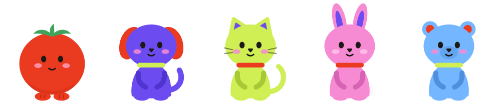
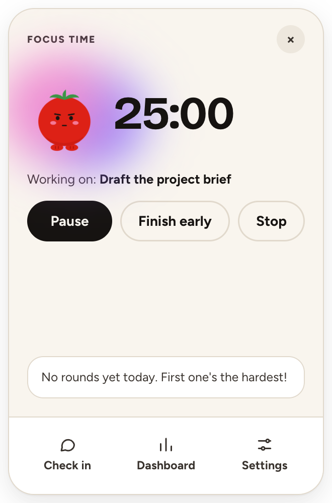
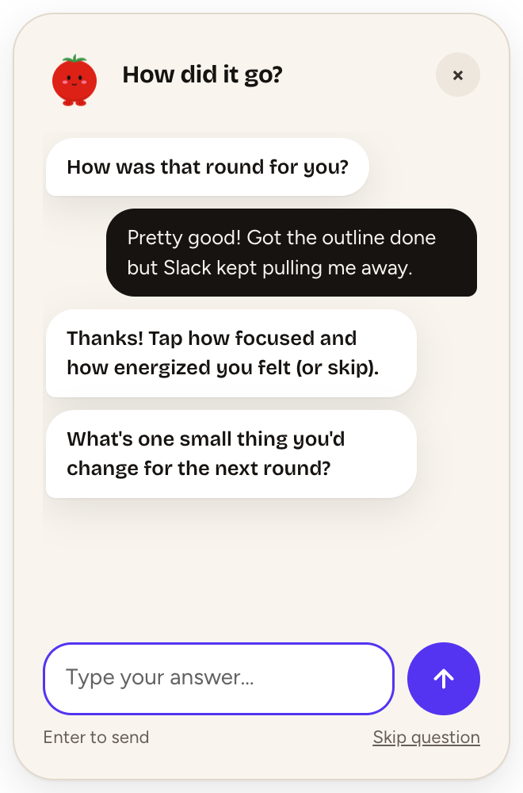
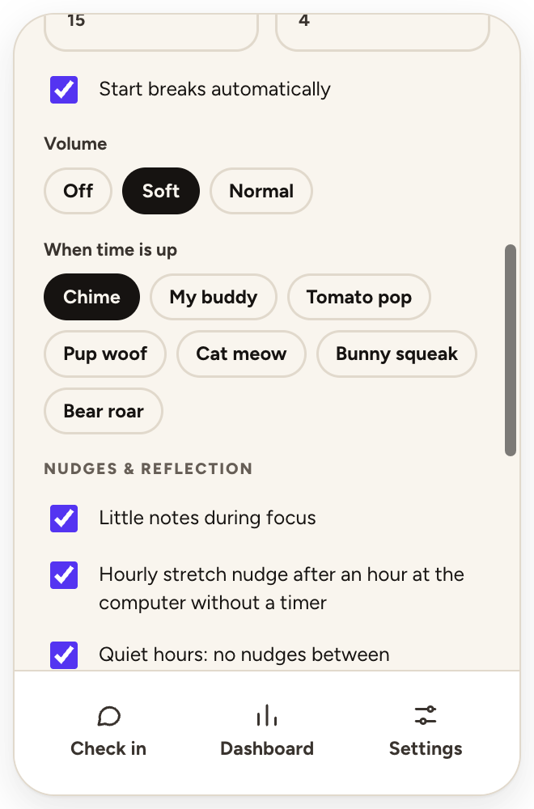
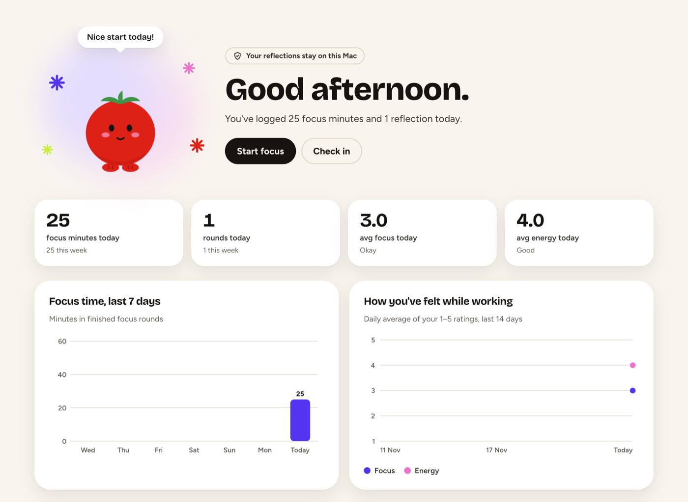

Focus Buddy is a little pet that lives on your desktop. It runs your Pomodoro timer, reminds you to take breaks, and after each round asks how it went, so you slowly learn how you work best.
For Macs with Apple chips (M1 or newer)
25 minutes of focus, 5 minute breaks, a longer break every fourth round. All adjustable. The countdown also shows in your menu bar, next to a tiny tomato.
Your buddy asks how it went and how focused and energized you felt. It takes ten seconds, and over time it shows you real patterns.
Focus minutes per day, how you've felt while working, and every reflection you've written, all in one place.
Keep the soft standard chime, or let your buddy tell you itself: a tomato pop, a puppy woof, a cat meow, a bunny squeak or a little bear roar.
Once an hour without a timer, your buddy suggests a stretch. It doesn't count time you're away from the computer, and it stays quiet in the evenings.
Add your own Anthropic API key and Claude writes thoughtful follow-up questions and a weekly-style review of your patterns. Completely optional.

Start a round. Type what you're working on, or just hit start. Pause, stop or finish early any time.

Say how it went. A couple of sentences and two taps. Skip whenever you like.

Make it yours. Pick your buddy, its color and name, round lengths, quiet hours and sounds.

See the bigger picture. Open the dashboard from the menu to look back over your week.
Choose a sound in Settings under "When time is up". Hourly stretch nudges always use the gentle chime.
Get the latest .zip from the releases page and double-click it to unzip.
Drag Focus Buddy into your Applications folder.
Focus Buddy isn't signed with a paid Apple developer certificate, so macOS may say it's "damaged". It isn't. Open the Terminal app, paste this line and press Return:
xattr -cr "/Applications/Focus Buddy.app"
Open Focus Buddy. Your buddy appears in the bottom-right corner and a tomato shows up in your menu bar. Tap the buddy to start.
When a new version is out, your buddy tells you and the menu bar menu gets a "Download update" item. Your settings and reflections stay put when you install the new version.
There's no account, no tracking and no server. Everything you write to your buddy is saved in a file on your own computer.
~/Library/Application Support/Focus Buddy/, only for your Mac user.Not yet. The current build is for Macs with Apple chips (M1, M2, M3 and newer).
Right-click your buddy (or click the tomato in the menu bar) and choose Open dashboard. Every check-in is listed there with the full conversation, and you can delete any of them.
No. Without one, your buddy uses its own built-in questions. A key from console.anthropic.com lets Claude ask more personal follow-ups and write insights. Usage is billed to your Anthropic account.
Click the tomato in the menu bar and choose Move buddy back to the corner.
Quit Focus Buddy, then delete the folder ~/Library/Application Support/Focus Buddy. Deleting the app alone keeps your data.
Click the tomato in the menu bar and choose Quit Focus Buddy.